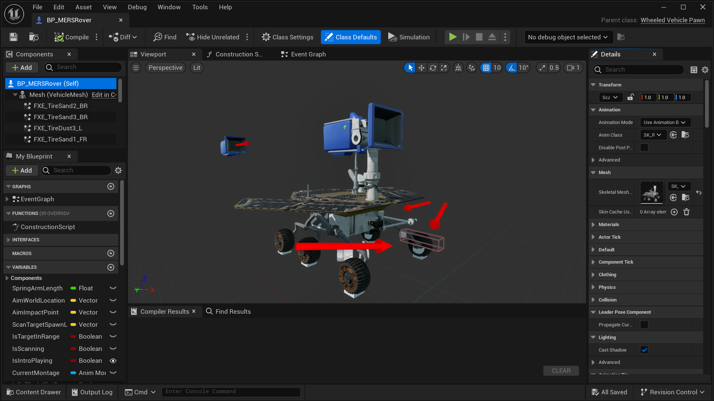

YOLO Implementation
By extending Unreal's functionality, we can implement a custom YOLO model for various tasks. Here, we trained one on pictures of a radio from the video game Portal 2 for object detection.
We present ECHO as a digital test bed for evaluating autonomous navigation tasks.
We leverage the Unreal Engine as a powerful tool for developing ECHO as a simulator. The engine and its high fidelity visuals make it a great choice for development, especially for constructing synthetic datasets of terrain imagery. We also observe that Unreal's flexibility allows us to integrate other tools into the research process, such as YOLO for object detection tasks.
Equally important, ECHO is open-source. Ease of access features provided by the Unreal Engine allow beginner and advanced programmers to contribute to this field of research. This is beneficial in a space that is often limited in the accessibility of its research tools.
By extending Unreal's functionality, we can implement a custom YOLO model for various tasks. Here, we trained one on pictures of a radio from the video game Portal 2 for object detection.
The 3D rover asset is a customizable model with which we can easily simulate sensor set ups. We can alternate between the first- and third-person perspectives to take in-situ images.
We note the inclusion of publicly-available, third-party assets in our research.
The rover and environment models are currently provided by user Tim8ch on the Unreal Marketplace.
{author = {Mohanty, Adyasha and Tribble, Samuel},
title = {ECHO: A Testbed for High-Fidelity Synthetic Martian Terrain Simulations using Unreal Engine},
year = {2025}}